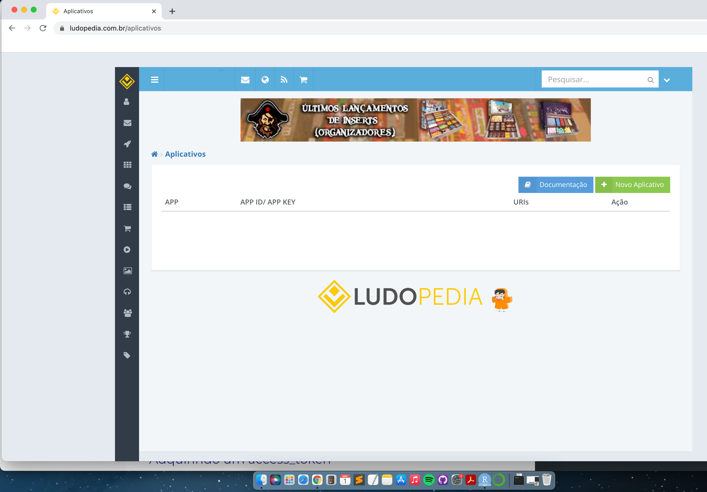
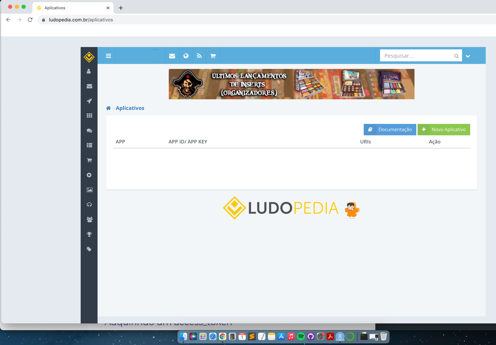
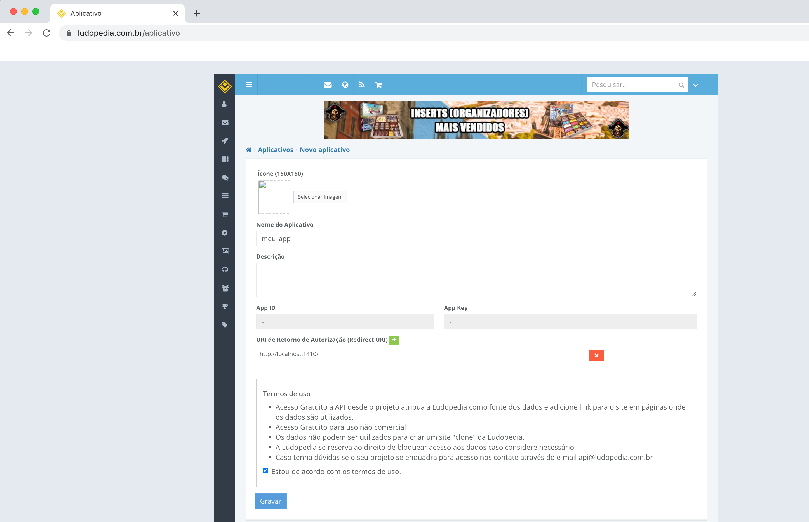
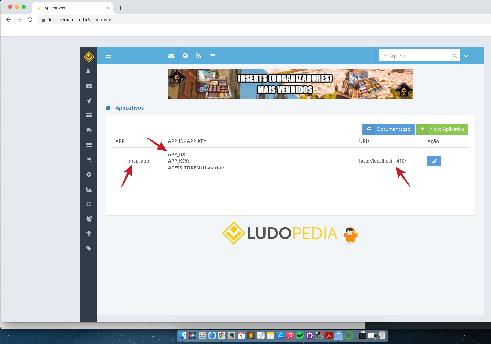

![]()
Código
magick::image_read(path = 'images/cria_app_passo_1.png')
Neste post eu mostro como interagir com a API da Ludopedia para adquirir os dados dos jogos de tabuleiro disponíveis nesse portal. Veremos que o processo é diferente daquele que usamos para explorar a API do BoardGameGeek, apesar das informações obtidas serem bastante similares. Este post servirá de referência para outras ideias que vamos desenvolver no futuro.
25 de março de 2022
12 de fevereiro de 2024
Ao longo dos últimos posts, apresentei alguns scrappers e análises baseadas nos dados disponíveis em dois portais de jogos de tabuleiro: o BoardGameGeek e a Ludopedia. Tudo o que foi desenvolvido focou muito nos rankings daqueles portais mas, recentemente, mostrei como podemos obter dados mais interessantes do que estes através da API XML do BoardGameGeek. A Ludopedia também oferece dados similares a esses, e que podem ser acessados através de uma REST API disponibilizada pelo portal. Assim, poderíamos usar essas APIs para obter o mesmo tipo de informação entre portais distintos, abrindo a possibilidade de desenvolvermos análises comparativas mais aprofundadas do que àquelas que já fizemos e explorar outras possibilidades.
Este post mostrará o passo a passo de como interagir com a REST API da Ludopedia. Esta é uma API que necessita de autenticação OAUTH 2.0 e, portanto, começaremos mostrando como fazer esta autenticação. Na sequência, veremos como usar os endpoints da API para extrair a lista de jogos e os metadados associados a eles. Com isso, espero que este post ilustre os tipos de dados que teremos à nossa disposição, além de servir de referência para a aquisição e tratamento dos dados da Ludopedia em posts futuros. Vamos ao trabalho!
Como já comentamos, a Ludopedia oferece uma REST API que faz uso de autenticação OAUTH 2.0, fazendo com que tenhamos que ter um token de acesso para que possamos passar as requisições para a API. O processo de autenticação e o uso dos endpoints da API é bem documentada, e pode ser acessada através deste link. No geral, a obtenção do token de acesso passa por duas etapas: a primeira é a criação de um aplicativo no site da Ludopedia que ficará responsável por gerar o token de acesso, e a segunda é a requisição do mesmo. Como tive bastante dificuldade em fazer sentido do encadeamento das etapas deste processo, vou apresentá-los abaixo e mostrar como fazer essa autenticação através do R.
O primeiro passo para a utilização da API é a criação de um aplicativo no portal da Ludopedia, que pode ser feita por aqui. Acredito que um pré-requisito para isso é que você tenha uma conta ativa no portal da Ludopedia, que pode ser criada gratuitamente e sem muito drama. Assumindo que você já tem essa conta, está logado no portal e tenha aberto o link acima, a página que você deve cair é àquela da figura abaixo. Para criar um aplicativo, não tem mistério: é só clicar no botão verde limão onde está escrito Novo Aplicativo.
magick::image_read(path = 'images/cria_app_passo_1.png')
Assim que a página seguinte for carregada, você verá um formulário conforme aquele apresentado na figura abaixo. Apesar de existirem alguns campos que podem ser preenchidos, você só precisa focar em dois deles:
http://localhost:1410/.Depois de preencher aqueles dois campos, basta clicar no checkbox para concordar com o termos de uso e, então, clicar em Gravar.
magick::image_read(path = 'images/cria_app_passo_2.png')
Se tudo tiver dado certo, você deverá ser levado de volta à página inicial da criação do aplicativo, mas agora perceberá que existem algumas informações adicionais. Duas delas foi você quem definiu - o nome do aplicativo (APP) e a URI de redirecionamento (URIs) -, enquanto as outras três vêm da criação do aplicativo mesmo. Destas, já temos de cara o token de acesso (ACESS_TOKEN (Usuário)) que pode ser guardado e usado diretamente para fazer as requisições à API (com um detalhe importante que já falaremos). A outra informação importante para se guardar é àquela do APP_ID, que será usada para fazer a autenticação de forma programática no R.
magick::image_read(path = 'images/cria_app_passo_3.png')
Com isso, fechamos a criação do aplicativo que nos dá acesso à API. Se quisermos consumir os dados da API, basta usar o header AUTHORIZATION nas requisições dos endpoints, passando um string que será composto pela palavra Bearer, um espaço, e o código do token de acesso (e.g., Bearer <token_de_acesso>). Se, por outro lado, forem outras pessoas que usarão seu aplicativo, então precisaremos ter uma forma de entregar esse token de acesso à elas. É à essa tarefa que vamos passar agora.
Ainda seguindo a documentação da API, e simplificando o que está escrito por lá, a aquisição de um token de acesso pelo usuário é feita pelo seu direcionamento para a url de autorização da API - https://ludopedia.com.br/oauth -, junto dos parâmetros APP_ID e REDIRECT URI que você obteve ao criar o aplicativo. Nessa parte, a documentação segue em frente para explicar mais um monte de coisas sobre a forma como a requisição deve ser feita, e que acaba ficando muito confusa. Entretanto, duas instruções são importantes: (1) uma vez que a autorização é feita, a requisição de acesso do token deve ser encaminhada para a url https://ludopedia.com.br/tokenrequest/ e, como resposta, (2) essa url retornará um arquivo JSON com o token de acesso. Vamos operacionalizar este processo usando as funções disponíveis no pacote httr, onde:
httr::oauth_endpoint para definir os endpoints de autorização e requisição do token de acesso. Para isso, definiremos os argumentos authorize = https://ludopedia.com.br/oauth e access = 'https://ludopedia.com.br/tokenrequest/', deixando o argumento request como NULL;httr::oauth_app para submeter as credenciais de acesso para a autenticação, o que nos trará como resultado a chave que trocaremos posteriormente pelo token de acesso. Essa função levará como argumentos o nome do aplicativo (appname = <nome do seu aplicativo>) e a URI de Retorno de Autorização (redirect_uri = <URI de retorno>) que você criou, além do APP_ID que foi gerado depois que você criou o aplicativo no portal da Ludopedia (key = <APP_ID do seu aplicativo>); e,httr::init_oauth2.0 para trocar a chave pelo token de acesso através dos endpoints que definimos. Essa função leva dois argumentos: o objeto criado no item 1 acima irá para o argumento endpoint, e o objeto do item 2 irá para o argumento app.Se tudo estiver certo, a função httr::init_oauth2.0 deve retornar um arquivo JSON (que você possivelmente visualizará como uma lista no R) onde um dos elementos é o access_token. Com isso, basta juntar este elemento com o string Bearer (que está dentro do elemento token_type no mesmo arquivo JSON), e teremos o token de acesso completo que deve ser usado nas requisições para a API. Falando nisso, vou usar a função que criamos abaixo para pegar o token de acesso que usaremos durante esse post.
# carregando pacotes
library(tidyverse) # core
library(jsonlite) # para arquivos json
library(httr) # para o scraping
library(fs) # para mexer com paths
# função para fazer a autenticacao do aplicativo
pegar_access_token <- function(APP, APP_ID, URIs) {
# setando o endpoint de acordo com os dados fornecidos na ludopedia
ludopedia_endpoint <- httr::oauth_endpoint(
request = NULL,
authorize = 'https://ludopedia.com.br/oauth/',
access = 'https://ludopedia.com.br/tokenrequest/'
)
# setando as configurações do aplicativo conforme definido no site da ludopedia
ludopedia_app <- httr::oauth_app(
appname = APP,
key = APP_ID,
secret = NULL,
redirect_uri = URIs
)
# pegando a autorizacao através do OAUTH2.0
autorizacao <- httr::init_oauth2.0(endpoint = ludopedia_endpoint,
app = ludopedia_app)
# criando string do token
access_token <- paste0(autorizacao$token_type, ' ', autorizacao$access_token)
# retornando o token de acesso
return(access_token)
}
# fazendo a autenticacao no portal
meu_token <- pegar_access_token(
APP = 'meu_app',
APP_ID = Sys.getenv('APP_ID'),
URIs = 'http://localhost:1410/'
)quarto…
O procedimento acima faz abrir uma janelinha no seu navegador para autorizar o acesso ao seu aplicativo. No entanto, o quarto não estava abrindo essa janela quando coloquei o post para renderizar. Não encontrei nada que pudesse explicar esse comportamento, tampouco algo que pudesse ajudar para deixar a função como ela estava anteriormente. Portanto, eu deixei o meu token hard-coded abaixo só por conta do post mesmo - mas se você for rodar o código linha a linha, o processo acima deve funcionar.
De posse do token de acesso, vamos explorar as funcionalidades da API da Ludopedia. A ideia aqui não é cobrir todos os endpoints disponíveis, mas apenas focar em um ou outro que serão importantes em posts futuros. Nesse contexto, trabalharemos com dois tipos principais de enpoints: aquele que retorna a lista dos jogos cadastrados no portal da Ludopedia e o outro que retorna os seus metadados. Vamos começar criando repositórios para armazenar cada uma das informações que formos trabalhando.
## definindo os paths temporarios que serao usados
path_para_jogos <- 'temporario_jogos'
path_para_metadata <- 'temporario_metadados'
## criando pasta para guardar a tabela com a lista de jogos
if(!dir_exists(path = path_para_jogos)){
dir_create(path = path_para_jogos)
}
## criando pasta para guardar a tabela com os metadados dos jogos
if(!dir_exists(path = path_para_metadata)){
dir_create(path = path_para_metadata)
}O primeiro endpoint que exploraremos é aquele que retorna a lista de jogos cadastrados no portal da Ludopedia. Para facilitar o uso deste endpoint, escrevi a função pega_lista_jogos abaixo, que já traz o endereço do endpoint, junto do header com o token de acesso (i.e., add_headers(AUTHORIZATION = access_token)) e uma lista com os parâmetros da query que precisa ser feita. Embora hajam alguns parâmetros disponíveis para esta query, focaremos em dois deles aqui: rows, que define a quantidade máxima de jogos que teremos como resposta por requisição (o limite é naturalmente 100 jogos por requisição, mas decidi deixar isso claro na função), e page, que define a página da lista dos jogos cadastrados que buscaremos (mais sobre isso no outro parágrafo). Como de costume, salvamos o arquivo JSON que recebemos de resposta em disco, de forma a acessá-lo à qualquer outro momento sem ter que ficar repetindo a requisição.
# função para pegar todos os jogos em uma dada página
pegar_lista_jogos <- function(pagina, access_token, path_salvar = NULL) {
# pegando os jogos da pagina selecionada
httr::GET('https://ludopedia.com.br/api/v1/jogos',
httr::add_headers(AUTHORIZATION = access_token),
query = list(rows = 100, page = pagina),
write_disk(path = stringr::str_glue(path_salvar, '/lista_jogos_pagina_{pagina}.json'),
overwrite = TRUE))
}
# pegando a primeira pagina da lista de jogos
lista <- pegar_lista_jogos(pagina = 1, access_token = meu_token, path_salvar = path_para_jogos)O parser do arquivo que recebemos não tem muito mistério. Precisaremos carregar o arquivo de resposta salvo em disco usando a função jsonlite::read_json e definindo o argumento simplifyDataFrame = TRUE, para estruturarmos tudo o que conseguirmos como um data.frame. O objeto resultante dessa operação será uma lista, onde o primeiro elemento, jogos, será a tabela com a lista dos 100 jogos disponíveis na primeira página da API. Focando neste elemento, precisaremos de mais um tratamento para passar o data.frame com a lista de jogos para um tibble e, eventuamente, colocá-la em um formato tal que não hajam list-columns.
# função para parsear uma pagina contendo a lista de jogos cadastrados na base da Ludopedia
parser_lista_jogos <- function(target_path) {
# carregando o arquivo json
jsonlite::read_json(path = target_path, simplifyDataFrame = TRUE) %>%
# extraindo o elemento correspondente aos jogos
pluck('jogos') %>%
# colocando como tibble
as_tibble() %>%
# deixando a tibble desaninhada
unnest(cols = everything())
}
# aplicando o parser da lista de jogos
parser_lista_jogos(target_path = dir_ls(path = path_para_jogos)) %>%
rmarkdown::paged_table()Com base nessa informação, já temos acesso a lista de alguns jogos cadastrados no portal da Ludopedia, No entanto, ainda há o segundo elemento daquela lista que acabamos de parsear, total, que nos informa sobre a quantidade total de jogos cadastrados. Para pegar esta informação, basta mudarmos o string que passamos para a função pluck, conforme apresentado abaixo.
# função para pegar a quantidade total de jogos disponiveis
pegar_total_jogos <- function(access_token) {
# faz um GET da pagina default dos jogos, parseia o conteudo e pega so o elemento
# da lista que contem a quantidade total de jogos cadastrados na base da Ludopedia
httr::GET('https://ludopedia.com.br/api/v1/jogos',
httr::add_headers(AUTHORIZATION = access_token)) %>%
httr::content() %>%
purrr::pluck('total') %>%
as.integer()
}
# pegando o total de jogos cadastrados na ludopedia
total_de_jogos <- pegar_total_jogos(access_token = meu_token)
total_de_jogos[1] 58640Como podemos notar, existem 58.640 cadastrados no portal da Ludopedia. Como temos acesso à 100 jogos por página da requisição, isto nos diz que precisaremos percorrer 58.640 / 100 = 586.4 = 587 páginas para obter a lista de todos os jogos disponíveis (i.e., total de jogos dividido por 100, arredondando o resultado para cima). Assim, bastaria iterar os valores do argumento pagina da função pegar_lista_jogos do índice 1 até o número de páginas definido acima dentro de um purrr::map, por exemplo.
Usamos o endpoint da lista de jogos cadastrados para obter os nomes dos jogos e o seu identificador numérico único, o que é ótimo se não tivermos noção do nome dos jogos nem nada do gênero. Por outro lado, se tivermos um jogo específico em mente e quisermos obter apenas o seu identificador numérico, podemos passar o seu nome como um argumento para a query do mesmo endpoint (search = <nome do jogo>). Eu empacotei essa aplicação do endpoint em outra função, e usei como exemplo a busca pelo identificador do jogo Ticket to Ride (que usamos como exemplo lá no post sobre a API XML do BoardGameGeek). O resultado que obtivemos (já parseado) revela que este uso do endpoint traz todos os jogos que, de alguma forma, tenham haver com aquele que buscamos - no nosso caso, também tivemos acesso à todas as expansões e implementações do jogo base.
# função para pegar a lista de jogos que contenham uma string especifica no nome
pegar_id_jogo <- function(nome_do_jogo, access_token) {
# pegando os jogos da pagina selecionada
httr::GET('https://ludopedia.com.br/api/v1/jogos',
httr::add_headers(AUTHORIZATION = access_token),
query = list(search = nome_do_jogo))
}
# pegando o exemplo do ticket to ride, como no scrapper do boardgamegekk
pegar_id_jogo(nome_do_jogo = 'Ticket to Ride', access_token = meu_token) %>%
# pegando o content da resposta
content(simplifyDataFrame = TRUE) %>%
# extraindo o elemento jogos de dentro da lista
pluck('jogos') %>%
# criando a tabela para a visualização na página
rmarkdown::paged_table()Acredito que estas são as funcionalidades básicas mais importantes deste endpoint. Vamos passar ao próximo!
O outro endpoint que exploraremos é aquele que traz os metadados dos jogos de tabuleiro, e que faz uso do identificador numérico do jogo diretamente na url da requisição. Desta forma, as informações da lista de jogos cadastrados no portal da Ludopedia passa a ser muito importante para utilizarmos este endpoint. Tendo isto em mente, vamos preparar a função pegar_infos_jogo adicionando um argumento que receberá o identificador do jogo (id_jogo) que buscaremos - novamente, utilizando o header com o token de acesso e salvando o arquivo JSON de resposta em disco para usarmos depois. Como exemplo, vamos usar essa função para pegar os metadados do Ticket do Ride.
# função para pegar as informações de um jogo
pegar_infos_jogo <- function(id_jogo, access_token, path_salvar = NULL) {
# pegando os detalhes do jogo
httr::GET(url = stringr::str_glue('https://ludopedia.com.br/api/v1/jogos/{id_jogo}'),
add_headers(AUTHORIZATION = access_token),
write_disk(path = stringr::str_glue(path_salvar, '/info_do_jogo_{id_jogo}.json'),
overwrite = TRUE))
}
# pegando as informações do Ticket to Ride
metadados <- pegar_infos_jogo(
id_jogo = 2,
access_token = meu_token,
path_salvar = path_para_metadata
)Vamos dar uma olhada na estrutura do arquivo JSON que recebemos como resposta, de forma a saber o que teremos que parsear.
List of 21
$ id_jogo : int 2
$ nm_jogo : chr "Ticket to Ride"
$ thumb : chr "https://storage.googleapis.com/ludopedia-capas/2_t.jpg"
$ tp_jogo : chr "b"
$ link : chr "https://ludopedia.com.br/jogo/ticket-to-ride"
$ ano_publicacao : int 2004
$ ano_nacional : int 2014
$ qt_jogadores_min: int 2
$ qt_jogadores_max: int 5
$ mecanicas :'data.frame': 2 obs. of 2 variables:
..$ id_mecanica: int [1:2] 3 18
..$ nm_mecanica: chr [1:2] "Gerenciamento de Mãos" "Construção de Redes e Rotas"
$ categorias :'data.frame': 1 obs. of 2 variables:
..$ id_categoria: int 111
..$ nm_categoria: chr "Jogo de Entrada"
$ temas :'data.frame': 1 obs. of 2 variables:
..$ id_tema: int 27
..$ nm_tema: chr "Transportes"
$ artistas :'data.frame': 2 obs. of 2 variables:
..$ id_profissional: int [1:2] 6 5
..$ nm_profissional: chr [1:2] "Julien Delval" "Cyrille Daujean"
$ designers :'data.frame': 1 obs. of 2 variables:
..$ id_profissional: int 4
..$ nm_profissional: chr "Alan R. Moon"
$ vl_tempo_jogo : int 45
$ idade_minima : int 8
$ qt_tem : int 4160
$ qt_teve : int 494
$ qt_favorito : int 545
$ qt_quer : int 2207
$ qt_jogou : int 5280Como podemos ver, existem duas principais estruturas de dados no arquivo. Em uma destas estruturas estão as informações armazenadas em vetores com um único elemento, como o ano de publicação do jogo, informações sobre quantidade de jogadores e título do jogo. A outra estrutura existente no arquivo são algumas informações armazenadas como data.frame, como as informações da mecânica de jogo, os temas e nome dos criadores do jogo. Estas informações estão nesta estrutura pois elas tendem a ser naturalmente multidimensionais, e possivelmente é mais fácil armazená-las em uma estrutura na qual você consiga discriminar o metadado linha a linha. Dada a natureza destas duas estruturas de dados, podemos parsear a primeira delas de forma bem simples, usando a função purrr::discard para descartar todos os elementos do arquivo JSON que sejam um data.frame (i.e., empregando o teste lógico is.data.frame), e juntando todos os elementos restantes coluna à coluna (i.e., usando um bind_cols).
A informação que buscaremos extrair da segunda estrutura de dados é àquela associada às colunas que têm o prefixo nm_ que contém as strings que definem àquela entidade. Note que em todos esses casos nós estamos interessados em extrair as informações que estão na segunda coluna de cada data.frame e que, portanto, não precisamos focar no nome da coluna em si para ter acesso à elas, apenas na sua posição. Além disso, pode existir mais de um elemento nesta coluna, e precisaremos concatenar estas informações em um string só. Assim, usaremos a função purrr::keep para reter todos os elementos que são um data.frame e, então, extrairemos a segunda coluna de cada uma delas mapeando a função purrr::pull. Finalmente, mapearemos um paste0 à cada elemento da lista para concatenar o seu conteúdo a um string só, e usaremos um bind_cols para colocar tudo como um tibble.
# lendo o arquivo JSON com os metadados do jogo
jsonlite::read_json(path = dir_ls(path_para_metadata), simplifyDataFrame = TRUE) %>%
# retendo apenas os elementos que sao dataframes
keep(is.data.frame) %>%
# pegando a coluna que contem os o nome do metadado
map(.f = pull, var = 2) %>%
# passando o vetor de strings para um unico string por elemento da lista
map(.f = paste0, collapse = ';') %>%
# juntando os elementos da lista coluna a coluna
bind_cols() %>%
# visualizando a tabela
rmarkdown::paged_table()Como estes dois passos são baseados no mesmo dado e devem compor o mesmo parser, vamos empacotá-los em uma única função, parser_infos_jogos.
# função para parsear as informações de um jogo
parser_infos_jogo <- function(target_path){
# carregando o arquivo JSON com os metadados do jogo
metadados <- jsonlite::read_json(path = target_path, simplifyDataFrame = TRUE)
# colocando todos os metadados em um tibble
bind_cols(
# parseando as informacoes que estao organizadas como strings ou numeros
metadados %>%
# descartando todos os elementos que sao dataframes
discard(is.data.frame) %>%
# juntando cada elemento da lista coluna a coluna
bind_cols(),
# parseando as informacoes que estao organizadas como uma lista de dataframes
metadados %>%
# retendo apenas os elementos que sao dataframes
keep(is.data.frame) %>%
# pegando a coluna que contem os o nome do metadado
map(.f = pull, var = 2) %>%
# passando o vetor de strings para um unico string por elemento da lista
map(.f = paste0, collapse = ';') %>%
# juntando os elementos da lista coluna a coluna
bind_cols()
)
}
## usando a função para parsear todas as informações
parser_infos_jogo(target_path = dir_ls(path_para_metadata)) %>%
# visualizando a tabela completa
rmarkdown::paged_table()Pronto! Com isso podemos ter acesso às informações que caracterizam cada um dos jogos de tabuleiro cadastrados no portal da Ludopedia.
No momento em que escrevo este post, a API da Ludopedia ainda está em fase de desenvolvimento e, portanto, existem algumas funcionalidades que estão previstas mas ainda não foram implementadas. De toda forma, no estado atual dela também podemos ter acesso à uma informação muito interessante: à coleção de jogos de tabuleiro de cada usuário. Este dado é legal pois ele traz coisas como as notas que a pessoa usuária deu à cada jogo, os comentários que a pessoa usuária fez sobre ele, se a pessoa tem ou não aquele jogo e coisas do gênero. Assim, ainda que a API não esteja completa, ela tem muitos outros potenciais de uso para a análise de dados.
Um exemplo de uso daqueles dados poderia ser na criação de algum tipo de sistema de recomendação, uma vez que podemos mapear as notas dadas à cada jogo de tabuleiro por cada um dos usuários. Não é o meu intuito detalhar aqui como usar a API para extrair este tipo de informação, mas podemos ter uma visão bem alto nível através da documentação da API: usamos um endpoint para extrair a coleção de jogos de uma pessoa usuária qualquer através do seu identificador (i.e., https://ludopedia.com.br/api/v1/colecao); este identificador, por sua vez, pode ser extraído a partir de um outro endpoint, que traz a lista de usuários cadastrados no portal (i.e., https://ludopedia.com.br/api/v1/usuarios); por fim, temos acesso a um máximo de 100 jogos por vez da coleção de cada pessoa, e precisaremos usar o mesmo método para a paginação das querys para extrair a coleção completa de cada usuário - e é possível determinar o tamanho da coleção de cada usuário diretamente através de um outro endpoint (i.e., https://ludopedia.com.br/api/v1/colecao/count). É claro que precisaremos aplicar algum tratamento aos dados que a API nos retorna para chegar à estrutura necessária para um sistema de recomendação, mas acredito que dê para pegar a ideia geral aqui.
Como a ideia é utilizar os dados dessa API no futuro, vou deixar aqui um dicionário para explicar as informações dos metadados que temos disponíveis - de forma similar ao que fiz para a API do BoardGameGeek.
NA caso o jogo não tenha sido lançado por aqui;Este post focou em demonstrar como interagir com a API da Ludopedia, indo do processo de autenticação, à requisição e o parser dos dados. Focamos exclusivamente nos endpoints para a aquisição dos dados dos jogos de tabuleiro, mas o mesmo processo pode ser utilizado para a aquisição de outros tipos de dados, tais como a lista lista de usuários, suas coleções e informações das partidas. Como vimos através deste exercício, essa API fornece uma forma bastante amigável de acessarmos dados muito relevantes para muitos tipos de análise.
Esta API é bastante diferente daquela oferecidade pelo BoardGameGeek, não só em termos de uso, mas também dos dados fornecidos. Neste contexto, pude notar que os metadados dos jogos de tabuleiro oferecidos pela API da Ludopedia representam um subconjunto daqueles disponíveis na página de cada jogo dentro do próprio portal, assim como daqueles que estão disponíveis através da API do BoardGameGeek. Comparando as informações àquelas no próprio portal, por exemplo, a API da Ludopedia não traz nada sobre as editoras, domínios e nem dependência do idioma. Nesta mesma linha, a API do BoardGameGeek fornece as informações das notas dos jogos junto dos metadados, ao contrário desta API que exploramos. Assim, me parece que ainda há espaço para que ela possa evoluir.
Por fim, o fato da API não fornecer tantas informações como àquelas do BoardGameGeek não é um problema. O principal motivo para isso é que é possível integrar as duas fontes de informação, usando uma para enriquecer a outra - como veremos através das análises de dados que faremos em posts futuros.
Acredito que grande parte das extensões que listei no post sobre a API do BoardGameGeek valha para este também - além, é claro, do fato de que várias destas extensões são co-dependentes entre os dois posts. De toda forma, acredito que a principal extensão relacionada especificamente a este post seria a da implementação das funções para acessar os dados de outros endpoints, juntamente com os seus respectivos parsers.
Dúvidas, sugestões ou críticas? É só me procurar pelo e-mail ou GitHub!
@online{marino2022,
author = {Marino, Nicholas},
title = {Interagindo com a API da Ludopedia},
date = {2022-03-25},
url = {https://nacmarino.netlify.app//posts/2022-03-25_api-ludopedia},
langid = {pt}
}